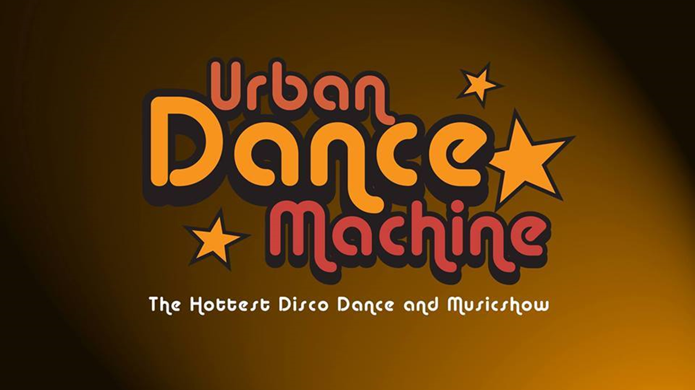

|
Meine Bands
|
|---|
|
FUNKgeræt
Geleitet von der gemeinsamen Leidenschaft für dynamische Live-Performances, hat sich die talentierte Formation auf die Darbietung
instrumentaler Funk- und Soul-Musik spezialisiert.


|
The Jamrays
The Jamrays ist eine Party- und Coverband rund um Sänger Jeremy Riley,
welche ursprünglich aus dem Heilbronner Raum stammt. Präsentiert werden Funk-
und Groovelastige bekannte Songs.
|
||
|---|---|---|---|
|
Konstantin Kölmel Project
Das Konstantin Kölmel Quartett rund um den Schlagzeuger Konstantin Kölmel ist ein Jazzquartett der etwas anderen Art.
Die junge Formation spielt moderne Jazztitel bspw. von Till Brönner und Thomas Siffling, bis hin zu Fusion-Jazz von Snarky Puppy, sowie Eigenkompositionen.
|
Blue Groove Quartet
Das Blue Groove Quartet ist ein Jazz- und Fusionquartett, das ursprünglich aus dem Mannheimer Raum stammt. Die Studenten bilden die
klassische Saxofonquartett-Besetzung mit Saxofon, Klavier, Bass und Schlagzeug. Die Musiker haben sich mittlerweile über Deutschland verteilt und sind zum
Teil Mitglieder des Bundesjazzorchesters.
|
||
|
Landesjugendjazzorchester BW
Das Landesjugendjazzorchester BW ist seit mehr als 40 Jahren das Auswahlorchester des Landes Baden-Württemberg im Bigbandformat.
|
Alternative Ways
Die vier Instrumentalisten fanden sich zusammen, um ihre musikalischen Hintergründe zu etwas neuem zu fusionieren.
Das Ergebnis ist eine teils dramatische, teils aber auch humorvolle Richtung des modernen Progressive Metal -
Komplexe Rhythmen, unkonventionelle Songstrukturen und spontane Genrewechsel
|
||
|
Bigband 17
Die Bigband17 spielt Musik aus dem Repertoire der großen Bigbands der 50er, 60er und 70er Jahre.
Es ist Musik aus der Zeit der eleganten Anzüge und schmalen Krawatten: Swingender Bigband-Jazz – tanzbar, hip und unterhaltsam zugleich.
|

Urban Dance Machine
Urban Dance Machine
ist eine Hommage an die US-amerikanische Disco-Kultur der 1970er Jahre und soll
den Besucher entführen in die große Zeit der "DISCO MUSIC" und dem eigenen Tanz -Kult der hieraus entstand! Dance,Dance,Dance,
war die Devise der Band "The Chic",nach der bald darauf der halbe Erdball tanzte!
|